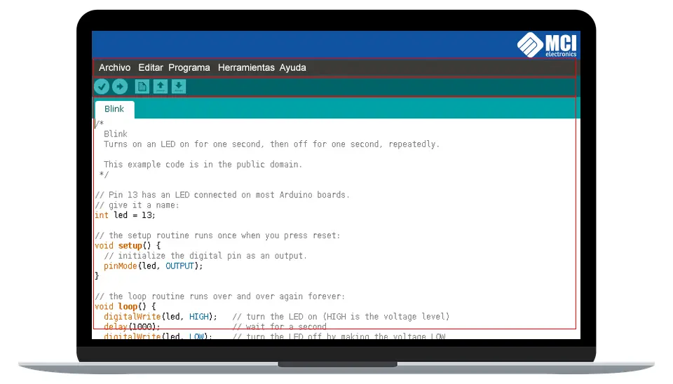

Familiarizate con el IDE de Arduino
Una vez instalado el IDE Arduino al iniciarlo no encontraremos con una ventana similar a esta.

Entorno de programación Arduino
El área de trabajo puede ser dividida en 5 grandes partes. De arriba abajo son: la barra de menús, la barra de botones, el editor de código, la barra de consola de mensajes, y la barra de estado.
La mayoría del tiempo estaremos trabajando en el editor de código, donde desarrollaremos nuestros proyectos.
A los elementos que mas les sacaremos provecho son:
Verificar: Este botón realiza dos funciones: comprueba que no hayan error en nuestro código, y si no hay problemas, lo compila.
Subir: Este botón lo utilizamos luego de “Verificar”. Su función es cargar en la memoria del microcontrolador el programa que hemos escrito.
Nuevo: Crea un nuevo sketch vacío.
Abrir: Despliega un menú con todos los sketches disponibles para abrir. Podemos abrir nuestros propios sketches como la gran cantidad de sketches que viene listos como ejemplos para probar, clasificados en categorías dentro del menú.
Guardar: Guarda el código de nuestro sketch en un fichero, el cual tendrá la extensión “.ino”. Podemos guardar estos ficheros donde queramos, pero el IDE Arduino nos ofrece una carpeta específica para ello, la carpeta “Arduino” en “Documentos”, ahí se creara una carpeta con el nombre de tu skecth, así el IDE evita que se mezclen los archivos de los distintos skecth.
Monitor Serial: Abre el monitor serial. Nos permite ver información transmitida desde nuestro Arduino por el puerto de comunicación serial, aquí hablamos un poco mas de el.
Menú contextual: Esta pestaña se ubica bajo el botón de monitor serial, nos permite abrir nuevas pestañas. Abrir nuevas pestañas es de suma utilidad cuando tenemos códigos tan largos que necesitamos dividirlo en partes para trabajar mas cómodamente. Es es así porque todas las nuevas pestañas abiertas forman parte del mismo proyecto que la primera pestaña original. Lo mas habitual es utilizar pestañas separadas para la definición de funciones, constantes o variables globales.
En la barra de menú hallaremos opciones mas tradicionales que de igual manera son útiles de conocer: “Archivo”, “Editar”, “Programa”, “Herramientas” y “Ayuda”.
Editar: Además de ofrecer acciones estándar como deshacer y rehacer, cortar, copiar y pegar texto, seleccionar todo el texto o buscar y remplazar texto, podemos ver otras acciones interesantes. Por ejemplo, gracias a la entrada “copiar al foro” podemos copiar el código de nuestro sketch al portapapeles de nuestro sistema operativo en una forma que es especialmente adecuada para pegarlo directamente en el foto oficial de Arduino. También podemos “copiar como HTML” el cual copia en una forma especial para pegarlo en paginas web genéricas.
Programa: en este menú se ofrece la acción de verificar/compilar nuestro sketch, la de abrir la capeta donde esta guardado el fichero “.ino” que se esta editando en este momento, la de añadir en una nueva pestaña un nuevo fichero de código a nuestro sketch y la de importar librerías.
Herramientas: En este menú se ofrecen diferentes herramientas variadas, como la posibilidad de auto-formatear el código para hacerlo mas legible, la posibilidad de guardar una copia de todos los sketches del proyecto actual en formato .zip, la posibilidad de abrir el monitor serie, etc. Otras herramientas mucho mas avanzadas son por ejemplo la entrada “Programador:” que podemos usar para seleccionar un programador externo y poder grabar el sketch en memoria a través de dicho programador o “Quemar bootloader”, útil cuando queramos grabar un nuevo bootloader en el microcontrolador de la placa.
Ayuda: desde este menú podemos acceder a varias secciones de la pagina web oficial de Arduino que contienen diferente artículos, tutoriales y ejemplos de ayuda. No se necesita internet para consultar duchas secciones ya que eta documentación se descarga junto con el propio IDE, por lo que su acceso se realiza en forma local.
Monitor Serial: El monitor serial es una ventana del IDE que nos permite desde nuestro computador enviar y recibir datos textuales a la placa Arduino usando el cable USB (el cual utiliza la conexión serie). Para enviar datos, simplemente hay que escribir el texto deseado en la caja de texto que aparece en su parte superior y presionar el botón “enviar”. Por otro lado, los datos recibidos provenientes de la placa serán mostrados en la sección central del “monitor serial”.
Es importante elegir la misma velocidad de transmisión que se haya especificado en el programa ejecutado en la placa, porque si no, los caracteres transferidos no serán reconocidos correctamente.
ATRAS<-----